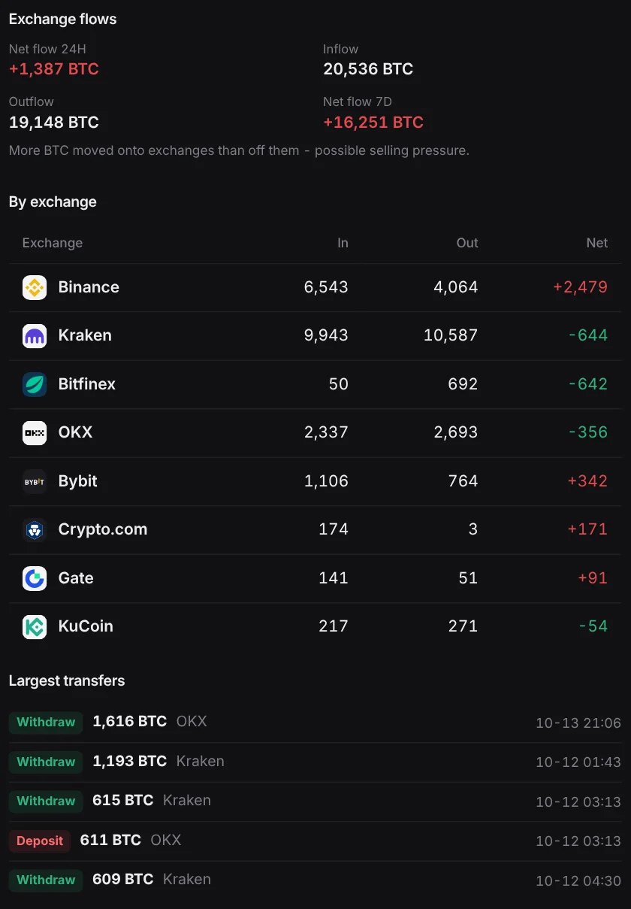

A net 16,251 bitcoin flowed onto exchanges in a week. Binance took in the most
DeepSea's dashboard shows a net 1,387 BTC flowed into exchanges in 24 hours, with Binance up 2,479 BTC while Kraken and Bitfinex lost coins.
Key points
- Exchanges tracked by DeepSea took in a net 16,251 BTC over seven days to 6:36 a.m. ET on November 5, 2026.
- In the last 24 hours, 20,536 BTC went in and 19,148 BTC came out, a net inflow of 1,387 BTC. Binance gained the most, a net 2,479 BTC.
- At CoinGecko's $80,280 price, the 7-day net inflow is worth about $1.30 billion.
 What DeepSea's data shows
What DeepSea's data shows
The Exchange flows panel on DeepSea's dashboard counts bitcoin moving into and out of known exchange wallets. LC Insight read it at 6:36 a.m. ET on November 5, 2026.
Over seven days, 16,251 BTC more moved onto exchanges than off. Over 24 hours, 20,536 BTC went in and 19,148 BTC went out, a net +1,387 BTC (rounded figures, so they do not subtract exactly). DeepSea's own note reads: "More BTC moved onto exchanges than off them," a sign of possible selling pressure.

Data: DeepSea (desea.io), checked November 5, 2026, 6:36 a.m. ET.
Exchange by exchange, 24 hours
Binance took in 6,543 BTC and sent out 4,064, a net +2,479 BTC. Bybit (+342), Crypto.com (+171) and Gate (+91) also gained. Kraken was the busiest: 9,943 BTC in and 10,587 out, a net minus 644. Bitfinex lost 642 BTC, OKX 356 and KuCoin 54.
Net BTC flow by exchange, 24 hours
BTC
24 hours to 6:36 a.m. ET, November 5, 2026. Source: DeepSea dashboard.
Price check
CoinGecko showed bitcoin at $80,280 at 6:39 a.m. ET, up 2.1% in 24 hours. At that price the 7-day net inflow is worth about $1.30 billion and the 24-hour figure about $111 million.

Why it matters
Coins usually go to an exchange to be sold, traded or used as collateral, and leave to be held elsewhere. A steady net inflow is a common warning sign. It is not proof of selling: exchanges also move coins between their own wallets, and some deposits back trading on credit.
LC Insight analysis
This section is our reading of the facts above, not a statement of fact.
- We think the 7-day number is the one to respect. A 24-hour net of 1,387 BTC is small next to 40,000 BTC moving in both directions.
- Binance gaining while Kraken and Bitfinex lose coins suggests money changing venues as much as heading for sale.
- Bitcoin rose 2.1% while coins piled onto exchanges, so the inflow has not yet shown up as visible selling pressure.
What's next
- Whether the 7-day net inflow keeps growing or turns negative
- Whether Binance's BTC inflow continues
Disclaimer. This article is based on public information and the sources listed below as of the update time shown. It is for information only and is not investment, legal or tax advice. Figures may change as companies and authorities publish new data.